INTRODUÇÃO
Sobre Mim
Olá, me chamo Davi Fernandes, mais conhecido pelo pseudônimo "Starciad". Sou brasileiro, natural de Minas Gerais e com um gosto muito grande pela tecnologia. Embora trate tudo isso — atualmente — como um mero hobby, sigo explorando e aprendendo, desbravando esse vasto mundo da tecnologia.
Sobre o Website
O intuito desse website é servir como uma espécie de porta de entrada para você poder explorar um pouco do meu universo. Aqui, você irá encontrar meus projetos, conquistas, histórias e muitas outras coisas! Meu objetivo é oferecer tudo isso em um ambiente que seja acolhedor, bem-estruturado e agradável para a leitura.
HISTÓRIA
Como as boas-vindas já foram concebidas, serei direto. Aqui, irei contar-lhe sobre minha trajetória. Compartilharei um pouco sobre como me envolvi com a tecnologia, pontuando os momentos mais relevantes para compor essa história. O propósito não é contar cada detalhe minunciosamente, mas sim, oferecer um panorama geral sobre minhas experiências e interesses. Espero que esta história possa inspirar você, ou, ao menos, servir como um ponto de partida para entender melhor meu trabalho.
Biografia
Infância
Para contar essa história, irei voltar um pouco no tempo; especificamente para o período em que, ainda, era apenas uma criança. Desde pequeno, sempre fui movido pela curiosidade de entender sobre como as coisas funcionavam. Não parece muito, mas são essas pequenas coisas — os passos mais triviais — que moldam nossa existência.
Meu primeiro contato significativo com esse universo foi através do meu PlayStation 2 que tinha quando era criança, em que, além dos jogos tradicionais, passava incontáveis horas explorando um emulador chamado SNES Station, que me apresentou a uma biblioteca vasta de clássicos do Super Nintendo. Foi ali que comecei a me perguntar: "Como esses jogos são feitos?". Essa pergunta se tornaria o ponto de virada para minha jornada.
Os Primeiros Passos
A grande mudança veio quando ganhei meu primeiro computador. Antes disso, minhas interações com tecnologia eram limitadas a visitas ocasionais a Lan Houses, onde jogava títulos pré-instalados ou games em Flash. Mas, com um PC em casa, o leque de possibilidades se abriu de vez.
Movido pela curiosidade, pesquisei no Google "como criar jogos" e fui apresentado a diversas ferramentas. Entre elas, descobri o 001 Game Creator, uma engine de desenvolvimento visual que me permitia criar jogos sem precisar programar diretamente. Comecei desenvolvendo pequenos projetos, experimentando mecânicas e testando ideias.
Com o tempo, percebi querer mais controle sobre o que criava. Foi quando decidi aprender programação de verdade. Minha introdução à programação textual aconteceu através da Unity Engine e da linguagem C# (CSharp), o que me proporcionou uma compreensão mais profunda da lógica por trás dos jogos. A transição não foi fácil, mas cada obstáculo vencido reforçava minha vontade de seguir em frente.
Explorando Novos Horizontes
Após me familiarizar com o C# e entender melhor os princípios da programação orientada a objetos, decidi expandir meu conhecimento. Descobri o MonoGame, um framework que, embora exigisse mais esforço para desenvolver do zero, me permitia aprender conceitos essenciais sobre renderização, gerenciamento de áudio e arquitetura de jogos de maneira mais aprofundada.
Ao longo dessa jornada, também explorei outras áreas no desenvolvimento de software. Experimentei a criação de aplicações web com o ASP.NET Core MVC, o desenvolvimento de interfaces desktop com o Windows Forms e WPF e até mesmo o universo mobile com o antigo Xamarin. Além disso, comecei a estudar novas linguagens como C, Python e PHP, além de aprofundar meus conhecimentos em tecnologias como HTML, CSS e JavaScript.
O interesse por sistemas operacionais também surgiu naturalmente. Aprender sobre formatação, dual boot e o ambiente Linux me ajudou a entender melhor a relação entre software e hardware, além de fortalecer minha familiaridade com o terminal e administração de sistemas.
O Futuro
Se tem algo que aprendi ao longo dessa trajetória, é que o aprendizado nunca tem fim. A tecnologia evolui constantemente, e estar sempre explorando novas possibilidades é parte do processo. Embora ainda esteja traçando meus próximos passos, sigo motivado a expandir meu conhecimento e a desenvolver projetos cada vez mais interessantes.
Agradeço por chegar até aqui. Mesmo que o ponto final tenha sido alocado ao texto, ainda não é o final dessa história. Um mero resumo não consegue suprir a existência de uma pessoa, contudo, fornece a ideia que é possível se ter sobre o indivíduo. Fique a vontade para ver os outros capítulos do website. Ainda há muitos outros conteúdos que podem vir a lhe interessar.
EDUCAÇÃO & FORMAÇÃO
Ensino Básico
Ensino Fundamental
Concluído em 2021
Ensino Médio
Concluído em 2024
Ensino Superior
Escola Superior Dom Helder Câmara (ESDHC) | Ciência da Computação | Bacharelado
Início: 2025 – Em andamento
Olimpíadas
Olimpíada Brasileira de Informática (OBI) - Modalidade Programação Nível 2
2023
Durante o ensino médio, graças à iniciativa de um professor, tive a oportunidade de participar pela primeira vez da OBI. Consegui avançar até a segunda fase, de um total de três, e foi uma experiência enriquecedora no mundo da programação competitiva.
Cursos
Inclusão Digital - Programação Web: Curso PHP
2023
Esse curso foi oferecido pelo governo de Belo Horizonte como parte de um programa de inclusão digital, abrangendo diversas áreas do conhecimento. Em específico, este curso introduziu o desenvolvimento web com PHP, abordando conceitos fundamentais de backend, manipulação de bancos de dados e criação de páginas dinâmicas. O uso do XAMPP também foi explorado ao longo das aulas.
CC50 - Curso de Ciência da Computação de Harvard
2022
Através de uma iniciativa da Fundação Estudar, tive o prazer de realizar esse curso no formato EaD (Ensino a Distância). Ele é a versão traduzida e adaptada do renomado CS50 da Universidade de Harvard, explorando conceitos fundamentais de ciência da computação, algoritmos, estrutura de dados e programação em C. Durante o curso, desenvolvemos diversos projetos práticos e passamos por múltiplos módulos, cada um repleto de desafios e aprendizados.
CONHECIMENTOS
Linguagens de Programação
C#
C
C++
JavaScript
Python
PHP
Desenvolvimento Web
Front-end
HTML5
CSS3
Back-end
ASP.NET Core
Flask
Desenvolvimento de Jogos
Mono Game
Unity Engine
Banco de Dados
SQLite
Ferramentas
XAMPP
Git
Visual Studio
Visual Studio Code
WSL2
Sistemas Operacionais
Windows 7 e 10
Linux Mint
PROJETOS
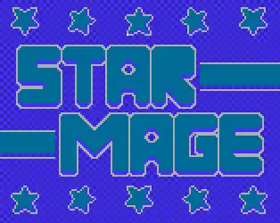
Star Mage
- C#
- MonoGame
Star Mage é um desafiador jogo de tiro 2D de rolagem lateral inspirado no design da era NES.
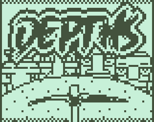
Depths
- C#
- MonoGame
Um jogo sobre mineração e exploração de catacumbas antigas em busca de tesouros!
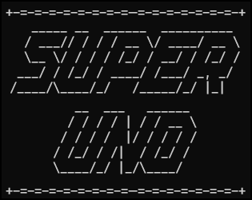
SUno
- C
Uma implementação terminal do jogo de cartas UNO, escrito em C seguindo o padrão C99.
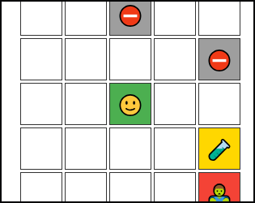
Star Zombie Chase
- HTML
- CSS
- JS
Um pequeno jogo de quebra-cabeça cujo objetivo é escapar de zumbis e coletar itens.
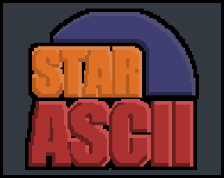
Star ASCII
- C#
Uma biblioteca para criação de animações ASCII para terminais.
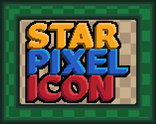
Star Pixel Icons (SPI) Theme
- Ícones
- Linux
Um pacote de ícones Pixel Art para Linux, fornecendo um visual nostálgico.
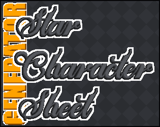
Star Character Sheet Generator (SCSG)
- HTML
- CSS
- JS
Um utilitário gratuito, simples e rápido para gerar dinamicamente fichas de personagens.
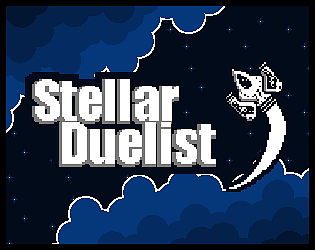
Stellar Duelist
- C#
- MonoGame
Um pequeno jogo de tiro sobre lutar contra alienígenas!
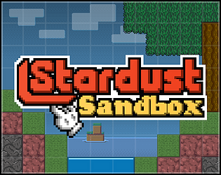
Stardust Sandbox
- C#
- MonoGame
Um jogo sandbox de simulador de partículas inspirado no clássico 'falling sand'.
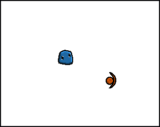
Slime Lab
- C#
- MonoGame
Pequeno jogo feito em MonoGame para estudos.
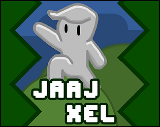
JaaJ Xel
- C#
- Unity
Um jogo simples do gênero Tower Defense e Survival feito para a Game Jaaj 6.